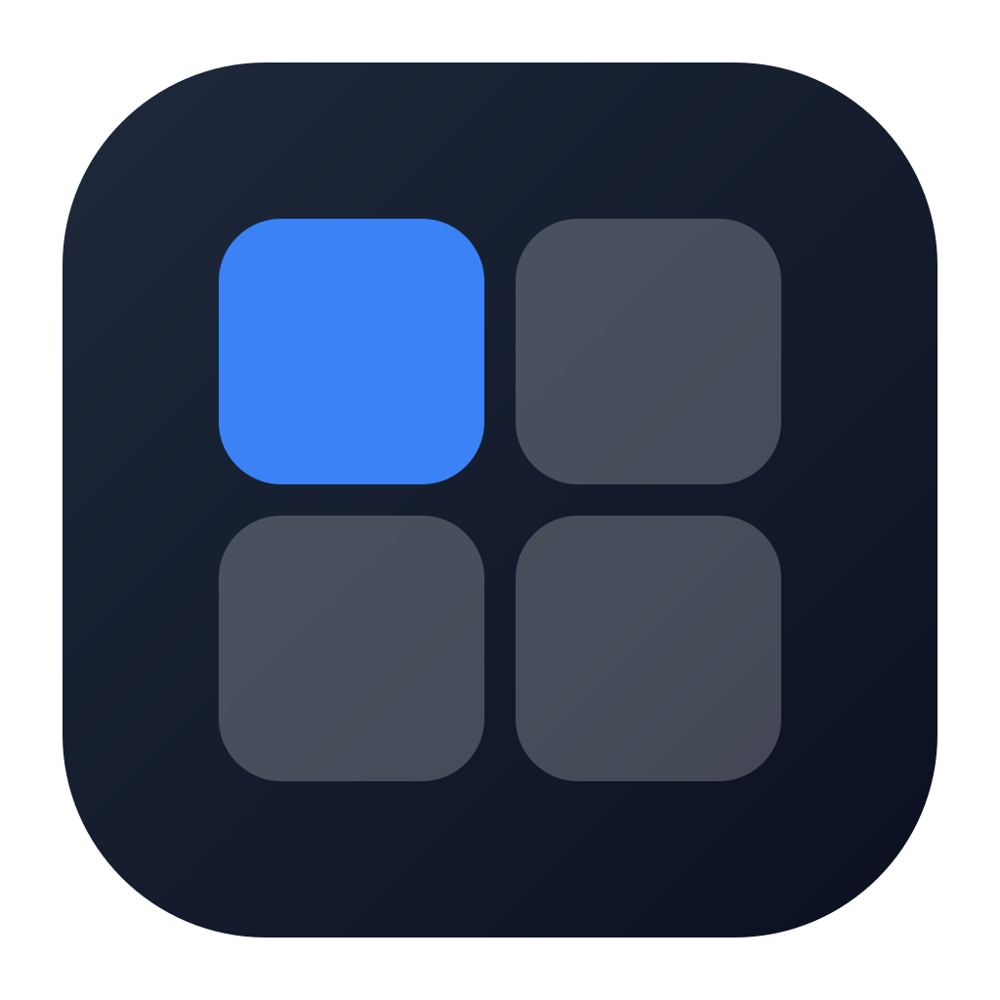
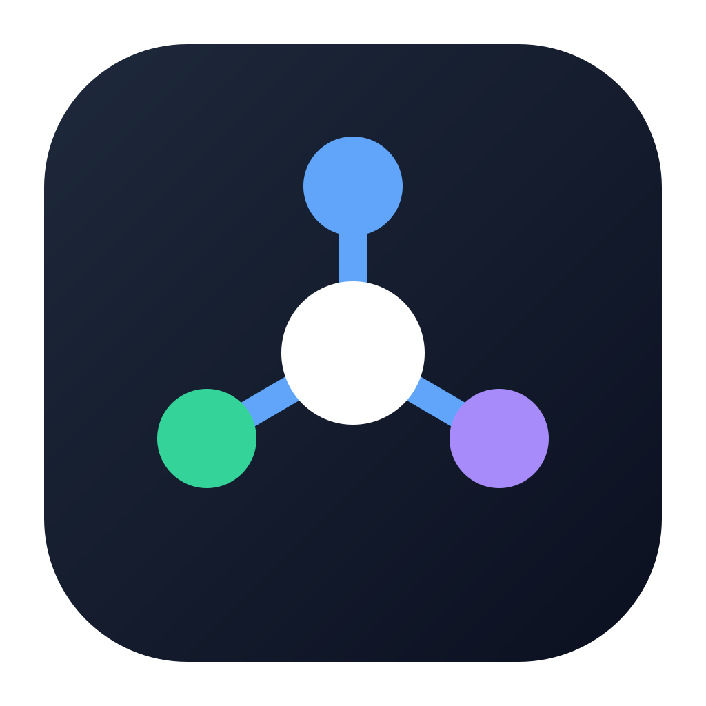

<meta charset='utf-8'><style>body{margin:0;padding:32px;background:#e5e7eb;font:16px sans-serif;display:grid;grid-template-columns:repeat(3,260px);gap:28px}figure{margin:0;text-align:center}img{width:260px;height:260px}figcaption{margin-top:6px}</style><figure><figcaption>A-提示符</figcaption></figure><figure><figcaption>B-四宫格</figcaption></figure><figure><figcaption>C-双箭头</figcaption></figure><figure><figcaption>D-中心节点</figcaption></figure><figure><figcaption>E-终端窗</figcaption></figure><figure><figcaption>F-字母W</figcaption></figure>